ZyLAB ONE’s intuitive document production feature accelerates and simplifies the process of preparing documents for production or export to third parties. Documents can be produced in a variety of formats -including pdf, native, or a combination of both - to meet all your production needs—see Productions.
The first step in the production process is defining the set of documents to be produced. Although a production can be based on a query or a Facet, it is common practice to create the data set based on applied tags, for example, either a custom To Be Produced tag or a series of tags such as Responsive but not Exempt Withheld. This ensures that you are producing exactly what is intended to be produced.
To create the production data set, filter from the Document List View, using the tag filter option. Set the sort order for your production using the filter options as shown here:
|
|
Tip: To QC your Production Set, add the applicable tags to your column view and set the List Option to a Family List View to look for any inconsistencies in family tagging. |
The ZyLAB document Production Wizard will guide you through the process. The Production Wizard is launched directly from the Document List view as follows: In the Document List, select the settings icon 
Then, select Productions > Create for Selection/Documents.
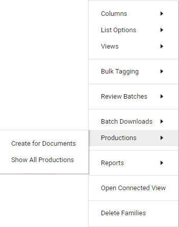
For more information on starting a production—see Productions.
The first step in the Production Wizard is to select a Production Template (if applicable), define the Production Name, and if applicable, define the bates numbers. Bates numbers are unique identifiers assigned to each page of a produced image of a document. They can be used for reference and retrieval once the documents are produced.
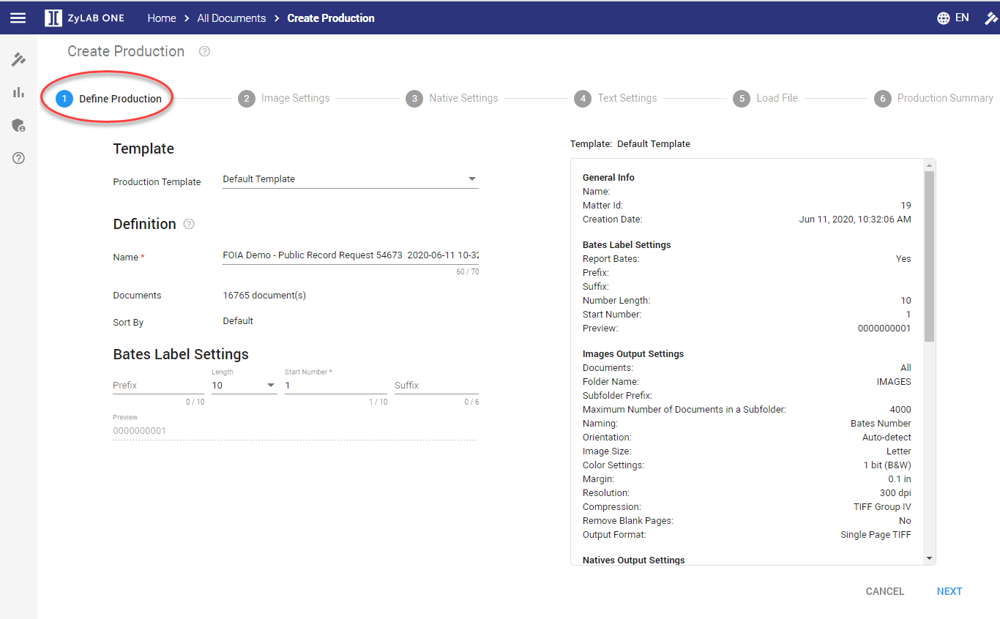
For more information, see Define Production.
In step two of the production wizard you can define if and how documents are produced
as images, either PDF or Tiff format.
With ZyLAB ONE’s flexible production,
you can produce all, none or some documents in image format. A common practice is to produce documents such as email and word
documents, in PDF format, and produce spreadsheets natively.
Find out how to create multiple format productions here:
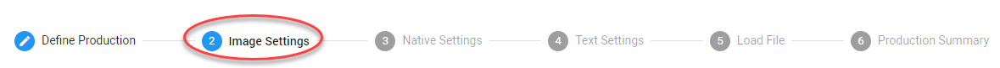
There are multiple options to configure from the Image Setting tab:
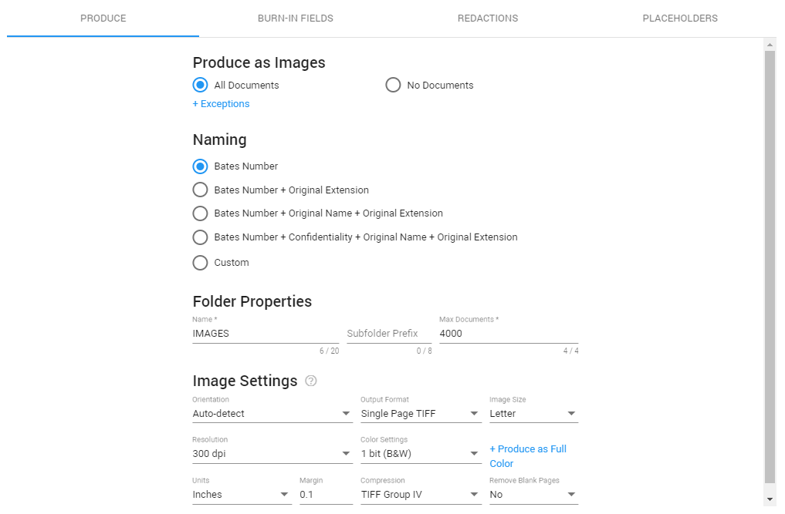 Produce From the Produce tab you will select which documents will be
produced as an image (PDF or Tiff) and other configurations associated with the image.
Produce as Images
All Documents - All documents added to this production, will be produced as images.
+ Exceptions - Selected file types will be produced as natives.
No Documents - No documents added to this production, will be produced as images.
Naming Define how you want to name your images. The first three options are most commonly used.
Bates Number - Bates Number as defined in step 1 of the Production Wizard.
Bates Number + Extension - The extension (file type) of each document will be added to the bates number.
Bates Number + Original Name + Extension - The original name of the document will be placed between the bates number and the extension (file type).
Bates Number + Confidentiality + Original Name + Extension - If all images are confidential, you can add that to the naming.
Custom - Alternatively, define your own naming convention. Add metadata (fields) from your matter.
Image Settings There are multiple settings available for defining how the images should
be handled during production, many of which will never need to be changed as they have been set to the industry standard default settings.
However, the Output Format must be selected.
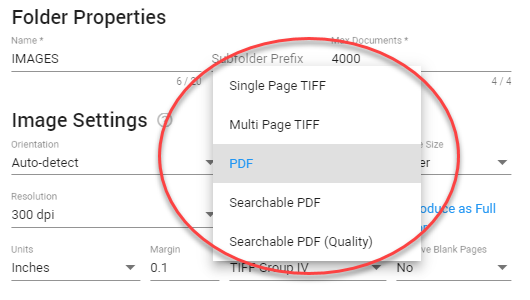 Burn-in-Fields Burn-in fields are electronic stamping or labeling on the produced image, such as a bates number. There are six locations on a produced document where a Burn-in-Field can be applied. Users can select information from the information drop-down menu, or create custom labels.
Redactions The Redactions tab is where you will configure how the redactions you created during your review will appear on the produced image of the document. There are several options available, including the color of the applied redaction, and where the text of the redaction code will appear on the produced image.
Placeholders Certain multi-media files, audio and visual presentations, and other files that either cannot be or are selected not to be rendered as an image (such as spreadsheets), will in most instances be produced in native electronic format by the parties. In such cases, a placeholder slip-sheet image indicating that the original electronic file was not converted to an image will be included in the appropriate sequence with the bates/production number indicated. The native file will be provided concurrently with the placeholder slip-sheeted image in the native output folder.
Several options are available for customizing the information displayed on the placeholder, including original file information, production information, as well as custom messaging.
For more information—see Image Settings.

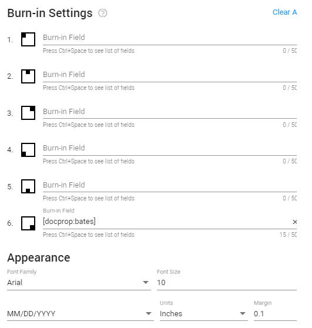

In step three of the production wizard is where you define if and how documents are produced in their native format, the format in which they were originally created and maintained. For example, MS Word documents are saved as .doc or .docx files, MS Excel files as .xls or .xlsx files, etc.

Why produce natives?
The most important reason to produce native files is that it may be required by opposition or the courts. Spreadsheets are commonly produced natively.
As with images, you can select to produce all, some or no documents in their native format.
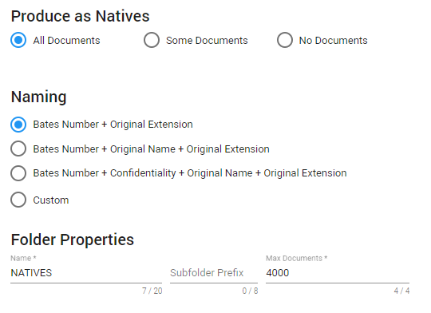
The Naming section configures how the output native file will be named. Define how you want to name your natives. Because native files cannot be directly Bates stamped, most users will incorporate the bates number in the name of the produced file.
|
|
Tip: Redacted documents will not be produced as natives or text. They can only be produced as images. |
Step four of the production wizard is where you define if and how documents are produced as text.
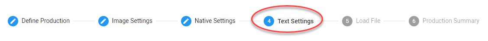
Searchable text files are likely to be produced in combination with related image files, since images (other than searchable PDFs) are not searchable.
For more information—see Text Settings.
Step five of the production wizard is where you can create a load file or metadata report related to the documents being produced. A load file acts as an index and reference to the document which can used by the receiving party to import the produced data into their own database so that the documents may be viewed, searched and filtered.
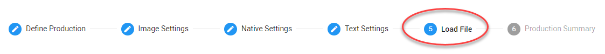
Select one or more load file formats.
Though the Settings of a load file can be adjusted, it is recommended to keep
the default settings.
For more information, see Load File.
The final step of the production wizard is the Production Summary page.
This page provides a summary of all the selected production settings for final review and
is where the production will be started by clicking Start.

All created productions can be viewed and managed from the Production Overview page. You will automatically be directed to this page when you start a production. You can also access it from the Matter Home screen. It is from this page that you can download a copy of the produced documents.
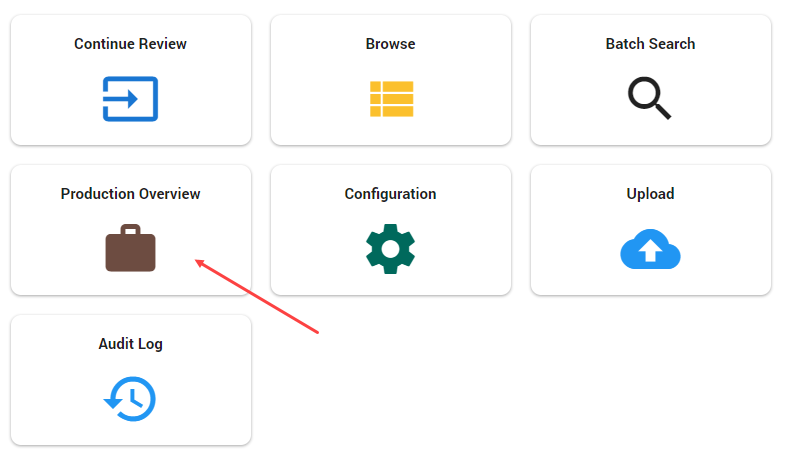
Each production is represented by a Production Card. If there are many productions, use the search field to search for a specific production. Or filter to show only a subset of all productions.

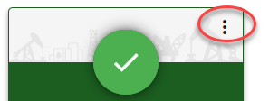
Download
Download the entire production, including all related files.
Load Files
Download or Edit the load files, if applicable.
Show Location
Show (and copy the link to) the location of where the production is being stored and can be accessed by the ZyLAB System Administrator.
Reuse Settings
Reuse the settings of this production to create a new one.
Delete
Delete the production.
For a completed production, you can choose to delete All related files. Or delete
Output Only; This deletes the produced files but keeps the production bates numbers available on the documents (which shows that they were part of this production).
For more information—see Production Overview.